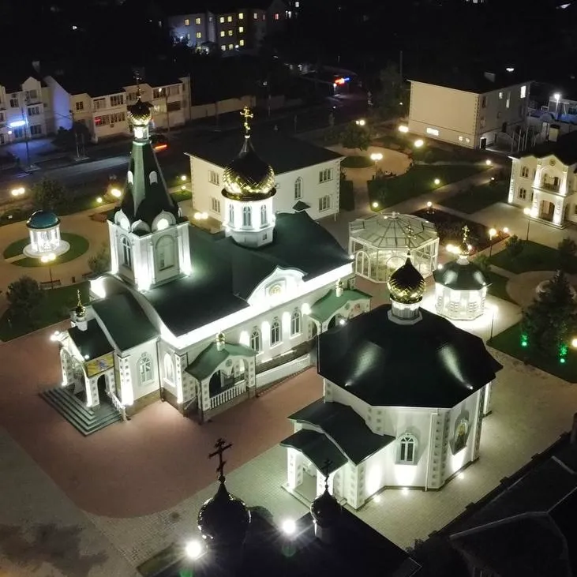

Свято-троицкий храм
Из документов архива Свято-Троицкого храма доподлинно известно, что
4 мая 1949 года Епископ Краснодарский и Кубанский Флавиан
благословил на приобретение постоянного здания для молитвенного дома
в станице Динской, и уже 5 мая 1949 года общиной был куплен дом № 25
по улице Широкой у Кралина Александра Васильевича. В молитвенном
доме в честь Святой Троицы с 1982 по 1992 год служил протоиерей Олег
Михайлович Малахов. Протоиерей Олег Малахов получил согласие на
реставрацию дома, но потихоньку начал возводить вокруг него новый
храм, и уже в июне 1988 года получил официальное разрешение на
строительство.
Расписывал храм заслуженный художник России из города Кирова Румянцев Игорь Николаевич.
В 2003 году была произведена реконструкция алтаря, выделено помещение пономаря и ризничная. Резьбу ручной работы для нового иконостаса выполнили станичники Ильченко Андрей Аркадьевич и Осипов Игорь Владимирович. Иконы для Свято-Троицкого храма были написаны крымскими художниками. Помощь в преображении храма оказали депутат Государственной думы РФ Горбачев В. Л., прокурор Динского района Ревенко Валентина Анатольевна, глава района Желток Юрий Николаевич, депутаты и прихожане Свято-Троицкого храма, руководители различных предприятий и организаций.
В 2005 году возвели административное здание храма, в настоящее время в нем расположена воскресная школа. В 2006 году завершили строительство причтового двухэтажного дома для священнослужителей.

Комсомольский парк
Одно из наиболее популярных мест отдыха у жителей и гостей Динского
района – знаменитый «Комсомольский парк». Официально это место
называется по-другому – Муниципальное бюджетное учреждение культуры
Муниципального образования Динской район «Центр народного творчества
«Комсомольский» природно-культурный комплекс более 12 га зеленого
массива в центральной части станицы Динской расположенный вдоль реки
Кочеты. По своим размерам и размещению в плане населенного пункта
позволяет обеспечивать наилучшие условия для отдыха населения и
проведения просветительских, культурно-массовых,
физкультурно-оздоровительных мероприятий, организации игр и
развлечений на открытом воздухе, создание условий для занятий
художественным любительским творчеств.
Историко-краеведческий музей
В музее представлены постоянные экспозиции: «Казачество», «Великая
Отечественная война», «Знаменитые земляки», «Супруги-изобретатели
Кирлиан», «Сделано в СССР».
На выставках можно ознакомиться с предметами интерьера и быта
кубанских казаков, экспонатами военного периода. Окунуться в
советскую эпоху и узнать, как жили люди во времена СССР, о людях,
создавших большую и сильную станицу и район, внесших большой вклад в
развитие поселений и Динского района в целом. Также в музее можно
ознакомиться с фотоматериалами, приборами научной деятельности,
книгами, рассказывающими о жизни и деятельности
супругов-изобретателей Кирлиан.
Фонд музейного собрания насчитывает более 14 тысяч предметов и
ежегодно пополняется.
Мемориал Великой Отечественной войны
Братская могила в станице Динской, являющаяся частью мемориального
комплекса Великой Отечественной Войны, находится на пересечении улиц
Гоголя и Красной, напротив средней школы № 2.
Мемориал, был установлен в 1973 году, и напоминает людям о тех
жертвах, которые принес советский народ во имя жизни будущих
поколений.
В братской могиле было захоронено 118 неизвестных бойцов, погибших в
1918 году, и 81 воин, погибший в 1943 году. Имена 253 динчан, не
вернувшихся с войны, золотом написаны на мраморных плитах.
Впоследствии, захоронение пополнялось вновь найденными останками
бойцом.
Строительство комплекса велось методом народной стройки. Каждая
организация станицы Динской вносила свой вклад. Благодаря этому в
короткие сроки мемориал был создан по проекту краснодарского
архитектора Анатолия Турина.